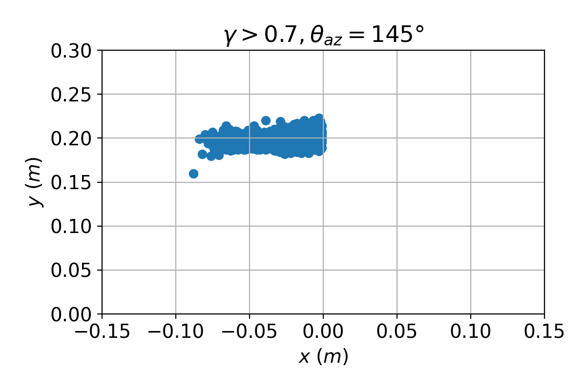
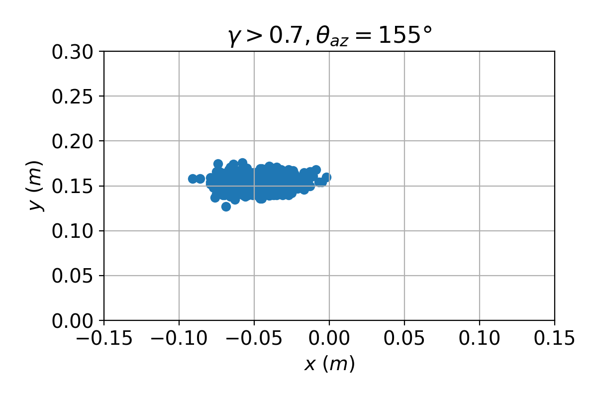
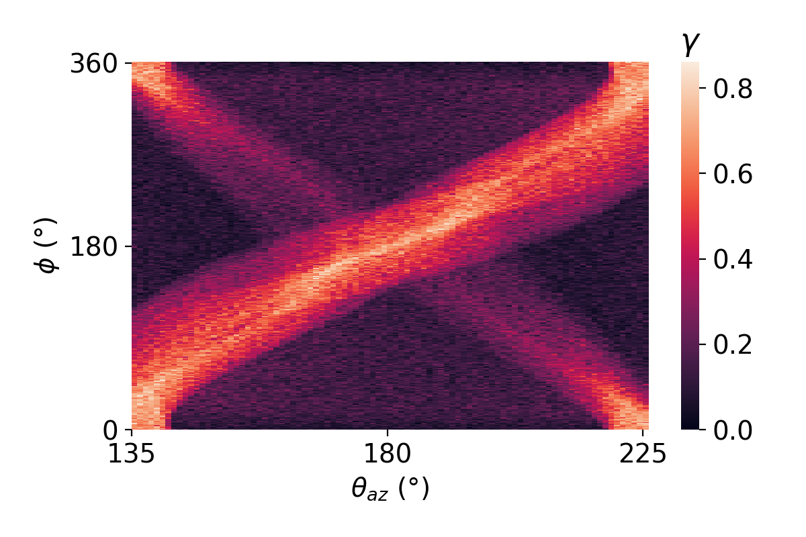
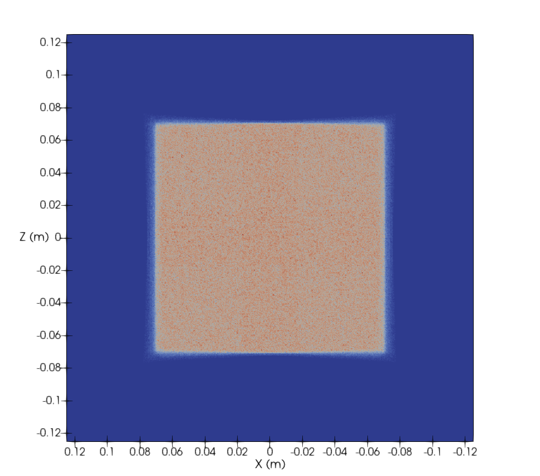
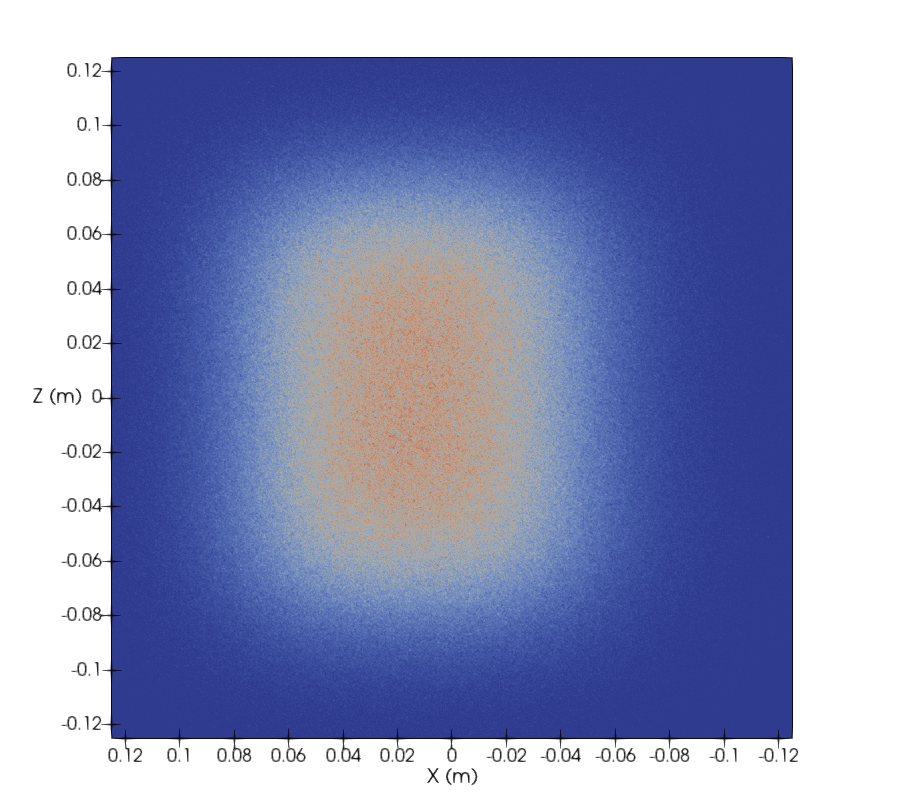
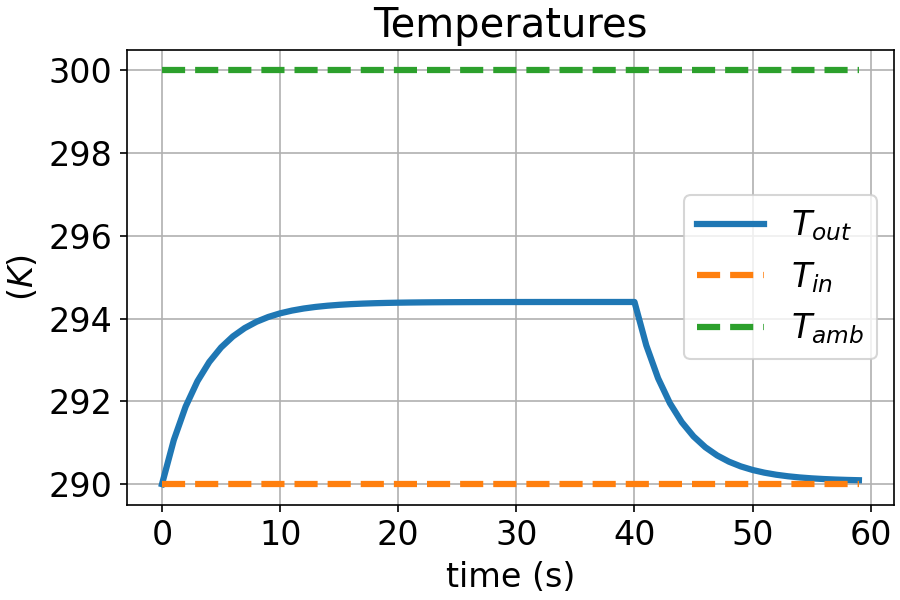
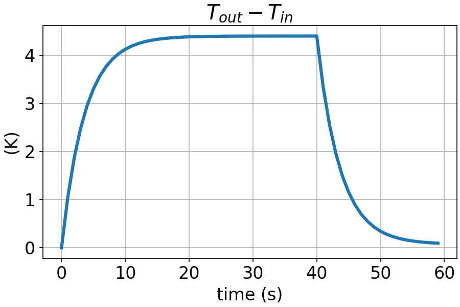

Concentrating Solar Thermal Systems
Simulation and experimental study for applications at intermediate to medium temperatures
Orestis Panagopoulos - Kontostaulakis
SCO1-parabolic

SCO1-parabolic: Linear absorber path

SCO1-parabolic: Absorber equation, $max(\gamma)$


SCO1-parabolic: Equation test

SCO1-CPC

SCO1-CPC: Linear absorber path

SCO1-CPC: Linear absorber path, $max(\gamma)$


SCO1-CPC: Equation test

SCO1-CPC: Non-linear absorber path


SCO1-CPC: Non-linear absorber path, thresholds


SCO1-CPC: Non-linear absorber path, mean positions


SCO1-CPC: Non-linear absorber path, $\gamma \gt 0.6$ positions





SCO1-CPC: Circular absorber path


SCO1-CPC: Circular absorber path, $\gamma \gt 0.7$

SCO1-CPC: Circular absorber path, linear vs polynomial


SCO4: Micro-mirror array
- 7 x 11 mirror array in landscape orientation
- 0.14 x 0.14 cm mirror facet
- 2 mm spacing between mirrors
- 0.25 x 0.25 cm receiver
- 1.5 m receiver height (above mirror array center)
Solstice: exported quantities
$$n = \frac{F_a}{F_p}$$
$$F_a = F_p \cdot C_f - L_{total}$$
$$F_p = DNI \cdot S_m$$
$$L_{total} = ( L_s + L_m + L_a + L_r )$$
$$F_a = F_p \cdot C_f - L_{total}$$
$$F_p = DNI \cdot S_m$$
$$L_{total} = ( L_s + L_m + L_a + L_r )$$
- $C_f$ - Cosine factor: the average cosine of the angle between the incoming solar radiation and the normal of primary reflectors.
- $F_p$ - Potential flux: the flux that would be absorbed by the receiver if all the reflectors were optimally oriented.
- $L_m$ - Missing Losses: the flux that reaches primary reflectors, is reflected but is not finally absorbed by the receivers.
SCO4: Absorbed flux
SCO4: Losses
SCO4: Shadow losses
 Transversal
Transversal
 Longitudinal
Longitudinal
SCO4: Missing Losses
SCO4: Flux distribution - ideal

$\theta_z = 0^{\circ}$
 $\theta_z = 45 ^{\circ}$ transversal
$\theta_z = 45 ^{\circ}$ transversal
SCO4: Flux distribution - errors
- Pillbox sun shape 4.65 mrad
- Mirror surface slope error 7 mrad
$\theta_z = 0^{\circ}$

$\theta_z = 45 ^{\circ}$ transversal
SCO4: Enclosure and support effects

$$Q_u = \dot{m} C_p (T_{out} - T_{in})$$
$$Q_r = I \cdot A$$
$$n = F_R(\tau \alpha) - F_R U_L\frac{T_{in} - T_{amb}}{IA}$$
ISO equation
\[ \begin{split} \dot m C_p \frac{(T_{out} - T_{in})}{A} & = F'\tau \alpha K_{dir} I_{dir} + F'\tau \alpha K_{dfu} I_{dfu} - c_1 (T_m - T_{amb}) \\ & - c_2 (T_m - T_{amb})^2 - c_3 v_w (T_m - T_{amb}) - c_6 v_w I_{glb} \\ & + c_4 [\epsilon_{longwave} - \sigma_{SB} (T_{amb}+273.15)^4] - c_5 \frac{dT_m}{dt} \end{split} \]
$$T_m = \frac{T{out} + T{in}}{2}$$ $$F' \tau \alpha = \frac{n_0}{0.85K_{dir}(15 ^{\circ} ) + 0.15 K_{dfu}}$$ $$K_{dir} = K_b(\theta_l) \cdot K_b(\theta_t)$$ \begin{split} n_0 & = F' (\tau \alpha)_{rec} \cdot (\tau^2 \rho \gamma)_{con} \\ & = n_{0,rec} \cdot (\tau^2 \rho \gamma)_{con} \end{split} $$c_1 = \alpha_1 \frac{A_{rec}}{A_{con}}, \quad c_2 = \alpha_2 \frac{A_{rec}}{A_{con}}, \quad c_5 = m_{th} \frac{A_{rec}}{A_{con}}$$
Modified ISO equation
Removing zero-terms:$$\dot m C_p \frac{(T_{out} - T_{in})}{A} = F'\tau \alpha K_{dir} I_{dir} - c_1 (T_m - T_{amb}) - c_2 (T_m - T_{amb})^2 - c_5 \frac{dT_m}{dt}$$
Substituting $T_{out} = 2T_m -Tin$ and solving for $\frac{dT_m}{dt}$ we get:
$$ \frac{dT_m}{dt} = \frac{1}{c_5} [F'\tau \alpha K_{dir} I_{dir} - c_1 (T_m - T_{amb}) - c_2 (T_m - T_{amb})^2 -2 \frac{\dot m C_p}{A} (T_{m} - T_{in})]$$
System response

